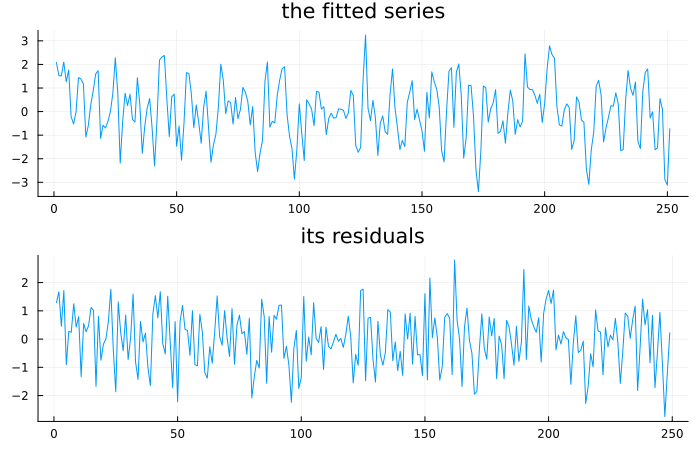
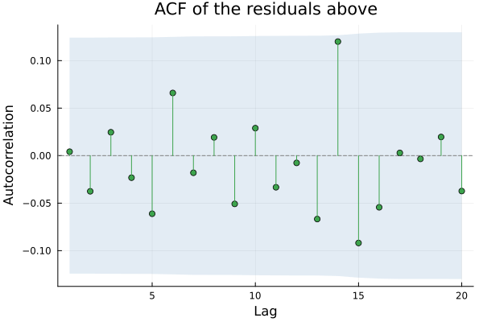
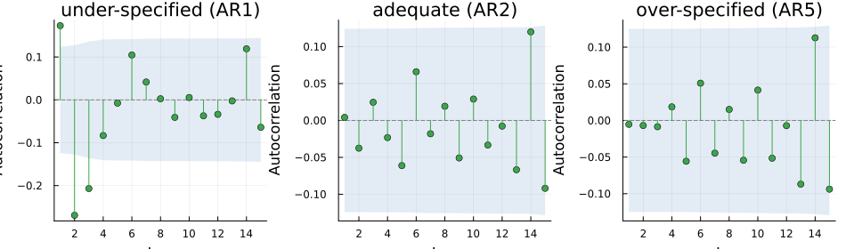
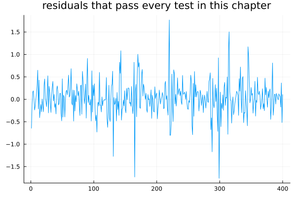

Testing the Residuals
using TSAnalytics, Plots, StatsAPI, Random
Random.seed!(6)
n = 300
y = zeros(n)
for t in 3:n
y[t] = 0.6*y[t-1] - 0.3*y[t-2] + randn()
end
y = y[50:end]
m = arx(y, 2; trend=:c)
resid = StatsAPI.residuals(m)
p1 = plot(y; title="the fitted series", legend=false)
p2 = plot(resid; title="its residuals", legend=false)
plot(p1, p2; layout=(2,1), size=(700,450))
The fit looks good. The residuals look like noise around zero, with no obvious drift and no obvious pattern. That impression is exactly the thing this chapter exists to interrogate, because Chapter 8 already showed the eye to be a poor judge of whether something "looks like noise."
If a model has genuinely captured everything systematic in a series, what it leaves behind should be unpredictable from its own past. That is a testable claim, phrased precisely enough to check — and it is the only claim residual diagnostics can actually check.
Look at the correlogram
The obvious first move, and it is the right one to make first.
plot(acf(resid, 1:20); title="ACF of the residuals above")
If a bar pokes outside the band, something the model did not capture remains, and its lag tells you roughly what. A spike at lag 12 on monthly residuals means unmodelled seasonality; a spike at lag 1 means the short-run dynamics are wrong. Chapter 5's controversy over which confidence band to draw applies here with real force — a residual spike that clears one convention's band and not the other's will change whether a reader accepts the model as adequate.
m_under = arx(y, 1; trend=:c)
m_over = arx(y, 5; trend=:c)
r_under = StatsAPI.residuals(m_under)
r_over = StatsAPI.residuals(m_over)
p1 = plot(acf(r_under, 1:15); title="under-specified (AR1)")
p2 = plot(acf(resid, 1:15); title="adequate (AR2)")
p3 = plot(acf(r_over, 1:15); title="over-specified (AR5)")
plot(p1, p2, p3; layout=(1,3), size=(950,280))
lb_under = ljungbox_test(r_under, 10; fitdf=1)
lb_ok = ljungbox_test(resid, 10; fitdf=2)
lb_over = ljungbox_test(r_over, 10; fitdf=5)
println("under-specified: p=", round(lb_under.pvalue, digits=4))
println("adequate: p=", round(lb_ok.pvalue, digits=4))
println("over-specified: p=", round(lb_over.pvalue, digits=4))under-specified: p=0.0
adequate: p=0.8746
over-specified: p=0.6489All three models were fitted on the same series, which really is an AR(2) process. The under-specified model leaves clear structure — a Ljung-Box p-value indistinguishable from zero. The adequately-specified model leaves bars inside the band and a comfortable p-value. So, importantly, does the over-specified one. Residual diagnostics cannot detect over-fitting. They test whether a model has captured enough of the structure, never whether it has used more parameters than it needed to. That is what the information criteria of Chapter 21 are for, and a reader who reads a clean correlogram as proof the model is right, rather than merely not obviously wrong, has understood only half of what this comparison shows.
One test instead of twenty
Checking each lag by eye means twenty separate chances to see something spurious. The portmanteau tests combine all of them into one number.
wn = randn(80)
for lag in 1:5
r = ljungbox_test(wn, lag; boxpierce=true)
println("lag ", lag, ": LB p=", round(r.pvalue, digits=4), " BP p=", round(r.bp_pvalue, digits=4))
endlag 1: LB p=0.7199 BP p=0.7249
lag 2: LB p=0.4164 BP p=0.4343
lag 3: LB p=0.4728 BP p=0.4967
lag 4: LB p=0.4906 BP p=0.5216
lag 5: LB p=0.2969 BP p=0.3395Ljung-Box and Box-Pierce track each other closely. Ljung-Box's statistic is consistently the larger of the two — it applies a finite-sample weighting Box-Pierce omits — which means its p-value runs consistently a touch smaller than Box-Pierce's at the same lag, and the gap widens a little as the lag count grows. The correction matters most exactly where sample sizes are small, which is precisely where having it is worth something. On the series above the difference never changes a conclusion. On a shorter series it can, and Ljung-Box is the one to reach for; Box-Pierce survives in software mostly for historical reasons.
lb0 = ljungbox_test(wn, 10; fitdf=0)
lb2 = ljungbox_test(wn, 10; fitdf=2)
println("without fitdf correction: p=", round(lb0.pvalue, digits=4))
println("with fitdf=2: p=", round(lb2.pvalue, digits=4))without fitdf correction: p=0.3555
with fitdf=2: p=0.2002This is the beat's real content. Residuals from a fitted model are not raw data — estimating p + q parameters has already used up degrees of freedom, and testing the residuals as though it had not makes the test too lenient. It will pass models it should fail. The uncorrected p-value above is larger than the corrected one, in the direction that always favours the model — systematically more forgiving, which is exactly backwards for a diagnostic. This package's fitdf defaults to 0, checked directly: the correction is not inferred automatically from a plain residual vector, and a caller fitting p+q parameters needs to supply that count explicitly.
Two more questions to ask
Random.seed!(1)
seasonal_resid = 0.3 .* sin.(2π .* (0:239) ./ 12) .+ randn(240)
lb15 = ljungbox_test(seasonal_resid, 15)
qs12 = qs_test(seasonal_resid, 12)
println("Ljung-Box(15): p=", round(lb15.pvalue, digits=4))
println("QS(12): p=", round(qs12.pvalue, digits=4))Ljung-Box(15): p=0.1832
QS(12): p=0.018A general portmanteau test spreads its attention evenly across every lag it tests. If you specifically suspect seasonality, a test aimed only at the seasonal lags has more power against exactly that alternative — checking directly on a series with a genuine but modest seasonal signal, Ljung-Box across 15 lags misses it entirely (p = 0.18) while QS, looking only at lags 12 and 24, catches it (p = 0.02) on the identical data. That gap is the whole argument for having both tests rather than only the general one.
dw = durbin_watson_test(resid)
println("Durbin-Watson statistic: ", round(dw.statistic, digits=4))Durbin-Watson statistic: 1.9848The oldest of these tests and the narrowest — it looks only at lag-1 autocorrelation, and it comes from the regression tradition rather than the time series one, which is why it remains a fixture in econometrics papers and is nearly absent from forecasting practice. Its statistic runs from 0 to 4, with 2 meaning no first-order autocorrelation, values below 2 meaning positive autocorrelation, and values above 2 meaning negative.
Python's statsmodels.stats.stattools.durbin_watson takes only the residuals and returns only the statistic — no p-value at all, confirmed directly from its source. Unable to compute the exact null distribution without the regression's design matrix, it declines to report a probability rather than report a wrong one — the same principle already met with Phillips-Perron's ρ variant in Chapter 9. Checking this package's own implementation directly rather than assuming it shares that limitation: it does not. durbin_watson_test implements Farebrother's (1980, 1984) exact algorithm — the same one R's lmtest::dwtest(exact=TRUE) uses — verified end to end against real lmtest output to six or more significant figures (test/verification/durbinwatson/), and falls back to a large-sample normal approximation only when the design matrix is not supplied or the sample is large. What looked, going in, like a third instance of a package honestly refusing to guess turns out to be a case of this package computing the real answer by a real algorithm instead — worth checking rather than assuming either way, which is exactly what happened here.
When the residuals pass and the model is still wrong
Random.seed!(20)
n2 = 400
e = randn(n2)
garch_resid = zeros(n2)
garch_resid[1] = e[1]
for t in 2:n2
garch_resid[t] = sqrt(0.05 + 0.85 * garch_resid[t-1]^2) * e[t]
end
plot(garch_resid; title="residuals that pass every test in this chapter", legend=false)
lb_g = ljungbox_test(garch_resid, 10)
arch_g = arch_lm_test(garch_resid)
println("Ljung-Box(10): p=", round(lb_g.pvalue, digits=4))
println("ARCH-LM: p=", arch_g.pvalue)Ljung-Box(10): p=0.9324
ARCH-LM: p=1.4356062836897578e-7The correlogram is clean. The Ljung-Box p-value is about as comfortable as a p-value gets, at 0.93. And the plot shows unmistakable structure — long quiet stretches interrupted by short violent ones, over and over. Every test built in this chapter is silent about it, because every one of them asks whether the residuals themselves are correlated, and here they genuinely are not — the sign of tomorrow's residual really is unpredictable from today's. What is predictable is its size, and a test built to detect correlation in levels has nothing to say about correlation in magnitude.
That gap — real, and invisible to everything in this chapter — is Chapter 11's entire subject.
Residual seasonality is the diagnostic most likely to matter, and most likely to fail, for Indian monthly data. A model built around a fixed twelve-month cycle still leaves structure behind once the actual cycle moves — Diwali in October one year, November the next — and what shows up in the residual ACF is a smear spread around lag 12 rather than one clean spike, which is easy to mistake for ordinary noise. A test aimed specifically at the seasonal lags, the way QS is, catches this more reliably than a general portmanteau test spreading its attention across every lag equally.
Where this leaves you
A model's residuals can now be checked for leftover correlation, using one combined test rather than twenty separate looks, with the degrees of freedom the fitting process used properly accounted for. Recall the principle worth carrying forward from this and the previous chapter: checking rather than assuming which functions genuinely decline to compute a number and which ones actually do the harder work turned out to matter twice already, in two different directions.
What cannot yet be checked is anything about the residuals' distribution, or about their variance — and the chart above just showed both can matter even when every correlation test passes cleanly.